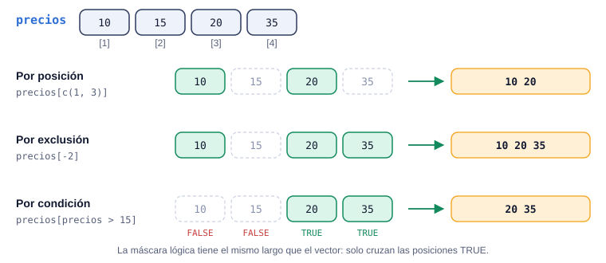
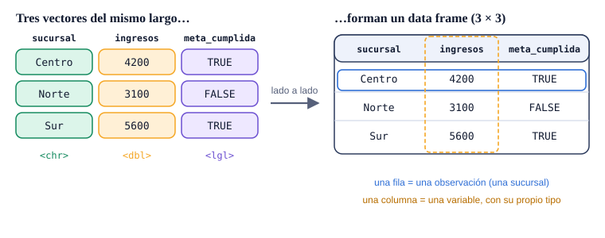
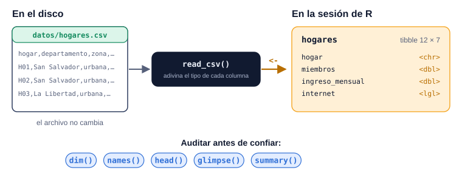

Semana 2 · Unidad 2 · De valores individuales a conjuntos de datos
¿Cómo representa R los datos con los que trabaja un economista?
De un número suelto a una serie, de una serie a una tabla y de un archivo a un objeto de R. Esta semana aprendes a recortar vectores, a leer una tabla por filas y columnas y a importar una base sin creerle a ciegas.
importar
→
ordenar
→
transformar
→
visualizar
→
modelar
→
comunicar
Pregunta orientadora¿Qué representa cada fila y cada columna de mi base, y cómo sé que R la leyó bien antes de calcular nada?
Lectura
R4DS cap. 7, §7.2 · Data import
Proyecto
Fase 2: conocer la base
Evaluación
Control 01: semanas 1 a 3
Cómo usar esta guía
La semana 1 te enseñó a hablarle a R con valores sueltos. Esta semana pasas de valores individuales a conjuntos de datos: series que se pueden recortar, tablas con filas y columnas, y archivos que se importan desde fuera de R.
Antes de claseLee R4DS cap. 7, sección 7.2, y responde el control de lectura.
Con RStudio abiertoDescarga hogares.csv a una carpeta datos/ de tu proyecto. En esta página ya está cargado para los bloques que lo usan.
Después de claseLlena las trazas de indexación y resuelve los ejercicios.
El ejemplo de limpieza de la columna age del capítulo usa mutate() e if_else(), que el curso enseña en las semanas 4 y 9. Si lo ves en la lectura, es un adelanto: el laboratorio de esta semana se limita a importar e inspeccionar.
Control de lectura
Con x <- c(8, 14, 11, 7), ¿qué devuelve x[-2]?
Un índice negativo excluye esa posición y conserva las demás. No resta nada a los valores.
¿Qué devuelve typeof(c(1, "dos", 3))?
Un vector atómico tiene un solo tipo. Al mezclar números y texto, R convierte todo a texto sin avisar.
Al sumar, TRUE cuenta como 1 y FALSE como 0: sum() responde “¿cuántos cumplen?”.
dim(hogares) devuelve 12 7. ¿Qué significa?
El primer número de dim() siempre son filas; el segundo, columnas.
¿Por qué un data frame puede tener una columna de texto y otra de números, y una matriz no?
Una matriz se comporta como un vector con dimensiones: un tipo para todo. El data frame es una lista de vectores del mismo largo.
Tras importar, ingreso_usd aparece como <chr>. ¿Qué es lo más probable?
readr adivina el tipo con una muestra de valores; un “$” o una coma de miles basta para que la columna sea texto. Suspende sumas y promedios hasta arreglarlo.
¿Qué ruta viaja mejor con tu proyecto a otra computadora?
Una ruta relativa se interpreta desde la carpeta del proyecto; una absoluta con tu usuario deja de funcionar en otra máquina.
¿Qué pasa con c(1, 2, 3, 4, 5) + c(10, 20)?
El reciclaje repite el vector corto; si el largo no es múltiplo, hay advertencia. Por eso conviene revisar length() antes de operar.
Operaciones vectorizadas y reciclaje
En palabras simples
Multiplicar dos vectores es como calcular la factura de cada cliente: la cantidad del cliente 1 por el precio del cliente 1, la del 2 por el precio del 2… Si una lista es más corta, R “recicla” la corta desde el inicio, como un cajero que vuelve a empezar la lista de precios sin avisar a nadie.
Cuando dos vectores del mismo largo se combinan, R opera posición a posición:
cantidades <- c(10, 15, 20) # unidades vendidas por producto
precios <- c(2, 3, 4) # precio de cada producto
ingresos <- cantidades * precios # posición a posición
ingresos
sum(ingresos) # un solo total
[1] 20 45 80
[1] 145
El resultado no es un solo número porque cada posición se multiplica de forma independiente; para un único total se envuelve en sum(). El riesgo aparece cuando los largos no coinciden:
[1] 11 22 13 24 15
Warning message:
In c(1, 2, 3, 4, 5) + c(10, 20) :
longer object length is not a multiple of shorter object length
[1] 5
[1] 2
Reciclaje silencioso
Si los largos fueran 6 y 2, R reciclaría sin advertencia (6 es múltiplo de 2). Un emparejamiento no intencionado produce números válidos y conclusiones falsas. Antes de operar dos vectores, compara sus length().
Indexar un vector
En palabras simples
Indexar es pedirle al archivista documentos de un expediente: “dame el 1 y el 3” (por posición), “dame todos menos el 2” (por exclusión) o “dame los que superan $10” (por condición). El expediente no cambia: solo recibes una copia de lo que pediste.
Con corchetes [ ] se extraen elementos de un vector. Hay tres criterios de selección, y confundirlos es un error frecuente al empezar:

La condición crea un vector lógico paralelo (una “máscara”): solo cruzan las posiciones con TRUE. Es la base de todo filtro futuro con dplyr.
precios <- c(10, 15, 20, 35)
precios[2] # por posición: un elemento
precios[c(1, 3)] # por posición: varios
precios[-2] # por exclusión
precios > 15 # la máscara lógica
precios[precios > 15] # por condición
precios[2:4] # un rango de posiciones
c(5, 8, 11) enumera exactamente esos 3 valores; 5:8 genera la secuencia de enteros 5, 6, 7, 8. Son mecanismos distintos que a veces se confunden al indexar.
Vectores lógicos: sum(), any() y all()
En palabras simples
Un vector lógico es la columna de “cumple / no cumple” de una auditoría. sum() cuenta cuántos cumplen, any() pregunta si al menos uno cumple y all() pregunta si cumplen absolutamente todos: una sola excepción basta para que all() diga que no.
Caso: ¿qué jornadas de capacitación se llenaron?
Pregunta
Una cámara de comercio organizó 5 jornadas. ¿En cuántas asistió al menos el 50 % de los inscritos? ¿Hubo alguna con menos de 20 asistentes? ¿Qué proporción del total de inscritos asistió?
Exploración
Hay dos vectores del mismo largo: inscritos y asistentes. Cada pregunta es distinta: un conteo, una existencia y una tasa global. Para combinar condiciones sobre la misma jornada, & exige que ambas sean TRUE en la misma posición.
Implementación
inscritos <- c(40, 60, 25, 80, 50)
asistentes <- c(30, 24, 20, 30, 45)
llena <- asistentes / inscritos >= 0.5
llena
sum(llena) # ¿cuántas?
any(asistentes < 20) # ¿alguna con menos de 20?
all(asistentes > 15) # ¿todas con más de 15?
inscritos >= 50 & asistentes < 35 # grandes y con poca asistencia
sum(asistentes) / sum(inscritos) # tasa global
mean(asistentes / inscritos) # promedio de tasas
Tres de cinco jornadas se llenaron; ninguna bajó de 20 asistentes. Las jornadas 2 y 4 son grandes y con poca asistencia: ahí conviene investigar. Solo el 58.4 % de todas las personas inscritas asistió, aunque el promedio de las tasas por jornada diga 64.5 %: las jornadas grandes (60 y 80 inscritos) tuvieron poca asistencia y pesan más en el total.
sum(llena) debe coincidir con los TRUE que ves en llena.
Tasa global contra promedio de tasas
La tasa global (sum(asistentes) / sum(inscritos)) pondera cada jornada según su tamaño; el promedio de tasas (mean(asistentes / inscritos)) le da el mismo peso a una jornada de 25 inscritos que a una de 80. Si la pregunta es “qué proporción del total de personas asistió”, la respuesta es la tasa global.
Un vector, un solo tipo
En palabras simples
Un vector es una columna de Excel con formato fijo: si en una columna de montos alguien escribe “no aplica”, toda la columna pasa a ser texto y ya no suma. R hace lo mismo sin avisar: convierte al tipo más flexible.
Jerarquía de coerción: al combinar tipos en un vector, R promueve en silencio hacia el más flexible (logical → integer → double → character).
Esta limitación es exactamente la razón por la que un economista no guarda una base completa en un solo vector: necesita una estructura que conserve columnas numéricas y de texto por separado. Esa estructura es el data frame.
Matrices
En palabras simples
Una matriz es el cuadro de inventario de las bodegas: una fila por bodega, una columna por día, todas las celdas del mismo tipo (números). Sirve para tablas homogéneas; para bases con texto y números mezclados, se usa un data frame.
Este es el ejemplo de la clase: el inventario de cuatro bodegas durante seis días. matrix() recibe los valores, el número de filas y el orden de llenado:
Sin byrow = TRUE, R llena la matriz por columnas: los 24 números quedarían en otro orden y cada fila ya no sería una bodega. Con 24 valores y nrow = 4, R calcula solo que hacen falta 6 columnas.
De vectores a tablas: data frames
En palabras simples
Un data frame es la hoja de la encuesta de hogares: cada fila es un hogar encuestado (una observación), cada columna es una pregunta (una variable) y cada celda es la respuesta de ese hogar a esa pregunta (un valor).
Un data frame (o su versión moderna, la tibble) es una colección rectangular de variables (columnas) y observaciones (filas). Por dentro es un conjunto de vectores del mismo largo puestos lado a lado, cada uno con su nombre y su propio tipo:

Cada columna conserva su tipo: por eso un data frame puede mezclar texto, números y lógicos, y una matriz no.
Una variable es una cantidad medible; un valor es su estado en una medición; una observación es el conjunto de valores medidos en condiciones comparables. Antes de calcular nada, la primera pregunta de todo análisis es: ¿qué representa cada fila?
Importar un CSV con read_csv()
En palabras simples
Importar es como recibir un reporte en papel y pasarlo al sistema: el papel (el archivo CSV) no cambia; lo que cambia es que ahora tienes una copia interpretada con la que puedes trabajar (el objeto en R). Si el sistema leyó mal una columna, se revisa antes de sacar cuentas.

El archivo y el objeto son dos cosas distintas. Auditar con glimpse() es lo que revela si una columna numérica llegó como texto.
Caso: la encuesta de hogares
Pregunta
Recibiste hogares.csv, una muestra de 12 hogares de seis departamentos. Antes de calcular nada: ¿qué representa cada fila, qué variables hay y de qué tipo son?
Exploración
Es un CSV: encabezados en la primera fila y valores separados por comas. Está en la carpeta datos/ del proyecto, así que la ruta relativa es "datos/hogares.csv". read_csv() es del paquete readr: primero se carga con library().
Rows: 12 Columns: 7
── Column specification ────────────────────────────────────────────────────────
Delimiter: ","
chr (3): hogar, departamento, zona
dbl (3): miembros, ingreso_mensual, gasto_alimentos
lgl (1): internet
ℹ Use `spec()` to retrieve the full column specification for this data.
ℹ Specify the column types or set `show_col_types = FALSE` to quiet this message.
Interpretación
readr informa 12 filas y 7 columnas, y el tipo que adivinó para cada una: 3 de texto (chr), 3 numéricas (dbl) y 1 lógica (lgl). Cada fila es un hogar.
Verificación: auditar antes de confiar
Ver la tabla en el panel Environment no es inspeccionarla. Cuatro funciones responden preguntas distintas:
dim(): el tamaño bruto. names(): nombres exactos (útil para detectar uno mal escrito).
glimpse(): el tipo de cada columna y sus primeros valores; es la que revela si un monto llegó como texto.
summary(): mínimo, cuartiles, media y máximo; un mínimo negativo en ingresos sería una alarma.
Una sola columna
Si el archivo aparece con una sola columna en vez de las esperadas, casi siempre es un problema de delimitador (un CSV separado por punto y coma, común en Excel en español, se lee con read_csv2()) o el archivo equivocado, no un error de R.
Valores faltantes escritos como texto
El argumento na declara qué texto debe leerse como faltante: read_csv("datos/x.csv", na = c("N/A", "")). Sin eso, un “N/A” literal se cuela como dato. Cómo tratar los NA se ve en la semana 4.
Tablas de traza
Escribe lo que devuelve cada expresión. Para varios valores, sepáralos con comas; para texto, sin comillas.
Traza 1 · Indexación
x <- c(8, 14, 11, 7)
Expresión
Resultado
length()
x[c(1, 3)]
x[-2]
x > 10
x[x > 10]
sum(x > 10)
x[2:3] * 2
Traza 2 · La encuesta de hogares
Usa la tabla de hogares (la ves con glimpse() arriba o abriendo el CSV).
Con hogares, calcula (a) la proporción del ingreso que cada hogar gasta en alimentos, (b) cuántos hogares gastan más del 40 % y (c) cuáles son. Usa solo corchetes y $. Si usaste IA, ¿qué comprobaste?
Interpretación: 6 de los 12 hogares dedican más del 40 % de su ingreso a alimentos; 5 de ellos son rurales y todos tienen ingresos menores a $1,000. Una proporción alta de gasto en alimentos es un indicador clásico de vulnerabilidad (ley de Engel).
Verificación: H08: 310 / 480 = 0.646. Todas las proporciones deben estar entre 0 y 1.
E4 · Matriz contra data frame
estructuras · ★★IA permitida
Ejecuta este código y explica por qué los ingresos dejaron de ser números en la matriz pero no en el data frame.
m <- matrix(c("Centro", "Norte", 4200, 3100), nrow = 2)
m
typeof(m)
d <- data.frame(sucursal = c("Centro", "Norte"), ingresos = c(4200, 3100))
typeof(d$ingresos)
La matriz, como un vector, admite un solo tipo: al mezclar texto y números, todo se volvió character (fíjate en las comillas de "4200"). El data frame guarda cada columna como un vector independiente, así que ingresos sigue siendo double.
E5 · Proyecto: conocer la base
proyecto · ★★IA permitida
Importa la base de tu proyecto (o la candidata) y responde en un párrafo: ¿qué representa cada fila (unidad de observación)?, ¿cuántas observaciones y variables hay?, ¿de qué tipo es cada variable relevante?, ¿hay columnas que llegaron con un tipo inesperado?, ¿cuál es la fuente y qué período cubre?
Criterios
La unidad de observación está dicha con precisión (“un hogar encuestado en 2023”, no “datos de hogares”).
Los números salen de dim()/glimpse(), no de mirar el Environment.
Se nombra al menos una limitación: período corto, variables faltantes, tipos que hubo que corregir.
Práctica intensiva
Ejercicios rápidos · ¿Qué imprime R?
Escribe lo que va después de [1]; varios valores separados por comas; texto sin comillas.
Código
Tu respuesta
c(5, 10, 15, 20)[c(2, 4)]
c(5, 10, 15, 20)[-c(1, 2)]
length(3:9)
sum(c(3, 8, 12, 1) > 5)
all(c(3, 8, 12, 1) > 0)
typeof(c(1.5, TRUE))
c(2, 4, 6, 8) * c(1, 10)
dim(matrix(1:12, nrow = 3))
matrix(1:6, nrow = 2, byrow = TRUE)[2, 1]
data.frame(a = c(1, 2, 3), b = c("x", "y", "z"))$b[2]
Problemas tipo examen
P1 · Tasa global de aprobación de créditos
vectores lógicos · ★★★Sin IA
Cuatro agencias de una financiera recibieron c(120, 45, 300, 60) solicitudes y aprobaron c(84, 36, 150, 30). Calcula la tasa de aprobación de cada agencia, la tasa global de la financiera y el promedio simple de tasas. Indica cuántas agencias aprueban al menos el 60 % y si todas aprueban al menos el 50 %.
Tu script debe cumplir estos casos de prueba:
Resultado
Esperado
Tasas por agencia (2 decimales)
0.70, 0.80, 0.50, 0.50
Tasa global (3 decimales)
0.571
Promedio de tasas
0.625
Agencias con al menos 60 %
2
¿Todas con al menos 50 %?
TRUE
Pista
La tasa global suma primero y divide después. La agencia 3, con 300 solicitudes, pesa mucho en la global y nada extra en el promedio simple.
Interpretación: la financiera aprueba el 57.1 % de todas las solicitudes, no el 62.5 %: la agencia más grande aprueba solo la mitad y arrastra la tasa global.
Con precios_texto.csv (arroz, frijol, aceite y azúcar), convierte ambas columnas de precio a número, calcula la variación porcentual 2024 → 2025 de cada producto con un decimal e indica qué productos subieron más de 8 %.
Tu script debe cumplir estos casos de prueba:
Producto
Variación %
arroz
9.1
frijol
11.1
aceite
0.0
azucar
5.9
Productos con más de 8 %: arroz y frijol.
Pista
parse_number() quita el $. Reasigna cada columna con $ y después todo es vectorizado.
Verificación: frijol: (1.50 − 1.35) / 1.35 = 0.111. Antes de calcular, typeof() de ambas columnas debe decir "double".
P3 · El inventario de las bodegas
matrices · ★★★Sin IA
Con la matriz bodegas de la sección Matrices, calcula el inventario total de la semana en Santa Tecla, el de San Salvador, el inventario del sábado en las cuatro bodegas y cuántos días Soyapango tuvo más de 10 unidades.
Tu script debe cumplir estos casos de prueba:
Resultado
Esperado
Total semanal Santa Tecla
82
Total semanal San Salvador
42
Sábado, cuatro bodegas
34
Días de Soyapango con más de 10
4
Pista
Una fila entera es bodegas["Santa Tecla", ]; una columna entera, bodegas[, "sabado"]. Después, sum().
Verificación: Santa Tecla: 3 + 19 + 19 + 19 + 12 + 10 = 82. El total de la matriz (sum(bodegas)) debe ser igual a la suma de los cuatro totales por bodega.
Proyecto grupal · Fase 2
Conocimiento de la base: el programa exige que el equipo pueda explicar la fuente, la unidad de observación, el número de observaciones, las variables relevantes y su significado, sus tipos, el período cubierto, si hay valores faltantes y las limitaciones. No basta con descargar una base y empezar a graficar.
Entregables de esta fase
Preguntas de defensa
¿Qué representa cada fila de esta base?
Es la primera pregunta del banco oficial. Responde con la unidad exacta (“un hogar encuestado”, “una empresa en un año”) y el número de filas que dio dim().
¿Cómo saben que la importación salió bien?
Porque revisaron dim() contra lo que esperaban, names() contra el CSV y glimpse() para confirmar que los montos son <dbl>. Si una columna llegó como texto, dicen cómo la corrigieron.
¿Por qué usan una ruta relativa?
Porque el proyecto se abre en otras computadoras (las del equipo y la del docente): "datos/base.csv" funciona en todas; una ruta con el nombre de usuario, solo en una.
¿Qué limitaciones tiene su base?
Período corto, muestra pequeña o no representativa, variables que faltan para la pregunta, definiciones que cambian entre años. Reconocerlas es parte de la nota de “comprensión de los datos”.